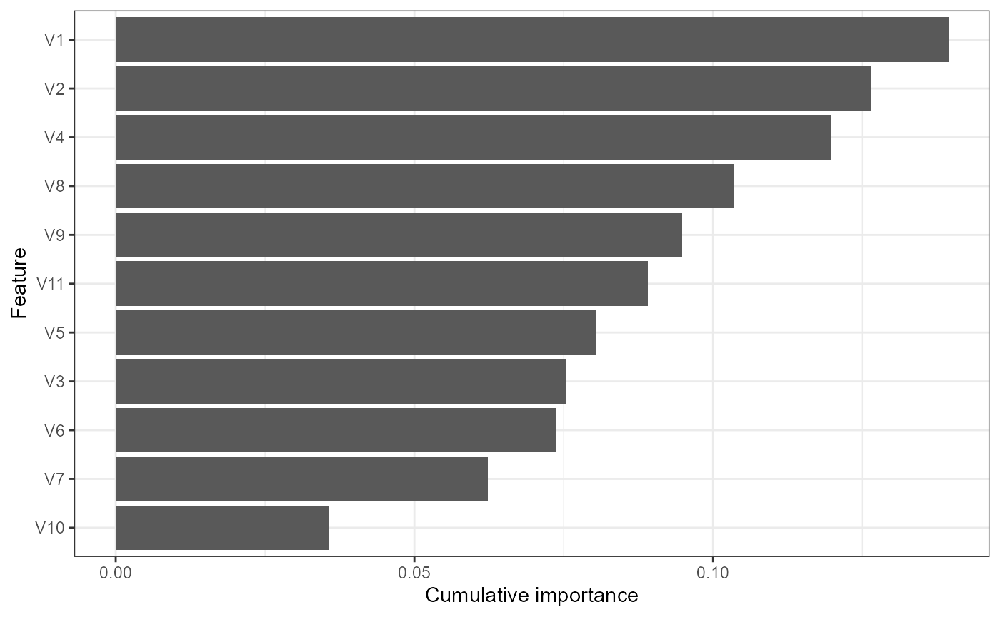

Author: Nick Fountain-Jones -affiliation: University of Tasmania
Author: Gustavo Machado -affiliation: North Carolina State University -Lab page: https://machado-lab.github.io/


This package aims to enable users to build and interpret multivariate machine learning models harnessing the tidyverse (tidy model syntax in particular). This package builds off ideas from Gradient Forests (Ellis et al 2012), ecological genomic approaches (Fitzpatrick and Keller, 2014) and multi-response stacking algorithms (Xing et al 2019).
This package can be of use for any multi-response machine learning problem, but was designed to handle data common to community ecology (site by species data) and ecological genomics (individual or population by SNP loci).
Installation
The current developmental version can be installed with
#install.packages("devtools")
devtools::install_github('nfj1380/mrIML')Dealing with Errors
There are automatic checks for mrIML. However, that only checks for Linux and mrIML is built on Windows.
Quick start
mrIML is designed to be used with a single function call or to be used in an ad-hoc fashion via individual function calls. In the following section we give an overview of the simple use case. For more on using each function see the function documentation. The core functions for both regression and classification are: mrIMLpredicts, mrIMLperformance, and mrInteractions,for plotting and visualization mrVip, mrFlashlight, andplot_vi. Estimating the interactions alone can be substantially computationally demanding depending on the number of outcomes you want to test. The first step to using the package is to load it as follows.
library(mrIML)
#other package needed:
library(vip); library(tidymodels); library(randomForest); library(caret); library(gbm);
library(tidyverse);library(parallel); library(doParallel); library(themis); library(viridis);
library(janitor); library(hrbrthemes); library(xgboost); library(vegan);library(flashlight);
library(ggrepel); library(parsnip);library(rsample); library(workflows)Model component
Now all the data is loaded and ready to go we can formulate the model using tidymodel syntax. In this case we have binary data (SNP presence/absence at each loci) but the data could also be counts or continuous (the set_model argument would be “regression” instead of “classification”). The user can specify any model from the tidymodel universe as ‘model 1’ (see https://www.tidymodels.org/find/ for details). However, we have done most of our testing on random forests (rf), xgr boost and glms (generalized linear models). Here we will specify a random forest classification model as the model applied to each response.
model1 <-
rand_forest(trees = 100, mode = "classification") %>% #100 trees are set for brevity
set_engine("ranger", importance = c("impurity","impurity_corrected")) %>%# select the engine/package that underlies the model
set_mode("classification")# choose either the continuous "regression" or binary "classification" modemrIMLpredicts
This function represents the core functionality of the package and includes results reporting, plotting and optional saving. It requires a data frame of X the loci or snip data for exampel and Y represented by the covariates
Load example data (cite) data from mrIML.
data <- gfData[1:80]
head(data)
x y bio_1 bio_10 bio_15 bio_18 bio_2 bio_7 elevation MEM.1 MEM.2 MEM.3 MEM.4
1 -101.57 49.14 31 182 63 189 131 489 498 24.55053 7.444415 -9.018635 0.06879434
2 -147.89 69.10 -107 85 60 89 110 507 400 -14.18000 -22.945314 -11.845836 21.59719769
3 -148.51 63.39 -52 90 63 196 102 399 1040 -15.77654 -27.420568 -13.038813 14.65433486
4 -98.35 54.51 -12 159 52 204 103 510 213 20.73482 8.715802 -19.187171 -5.13771830
# Define set of features
FeaturesnoNA<-Features[complete.cases(Features), ]
Y <- FeaturesnoNA #for simplicity
# Define set the outcomes of interst
fData <- filterRareCommon (Responsedata, lower=0.4, higher=0.7)
X <- fData #
yhats <- mrIMLpredicts(X=X,Y=Y, model1=model1, balance_data='no', mod='classification', parallel = TRUE)
#save(yhats, file='logreg_model')
ModelPerf <- mrIMLperformance(yhats, model1, X=X) #
ModelPerf[[2]]Ploting
VI <- mrVip(yhats, Y=Y)
plot_vi(VI=VI, X=X,Y=Y, modelPerf=ModelPerf, cutoff= 0, plot.pca='yes') #the cutoff reduces the number of individual models printed in the second plot. 
Effect of a feature on genetic change
We also wrap some flashlight functionality to visualize the marginal (i.e. partial dependencies) or conditional (accumulated local effects) effect of a feature on genetic change. Partial dependencies take longer to calculate and are more sensitive to correlated features
flashlightObj <- mrFlashlight(yhats, X, Y, response = "multi", model='classification')
#plot prediction scatter for all responses. Gets busy with
plot(light_scatter(flashlightObj, v = "Forest", type = "predicted"))
#plots everything on one plot (partial dependency, ALE, scatter)
plot(light_effects(flashlightObj, v = "Grassland"), use = "all")
#profileData_pd <- light_profile(flashlightObj, v = "Grassland")
#mrProfileplot(profileData_pd , sdthresh =0.05) #sdthresh removes responses from the first plot that do not vary with the feature
profileData_ale <- light_profile(flashlightObj, v = "Grassland", type = "ale") #acumulated local effects
mrProfileplot(profileData_ale , sdthresh =0.01)
#the second plot is the cumulative turnover functionFeatures interact
Finally, we can assess how features interact overall to shape genetic change. Be warned this is memory intensive. Future updates to this package will enable users to visualize these interactions and explore them in more detail using 2D ALE plots for example.
interactions <-mrInteractions(yhats, X, Y, mod='classification') #this is computationally intensive so multicores are needed. If stopped prematurely - have to reload things
mrPlot_interactions(interactions, X,Y, top_ranking = 2, top_response=2)References
Xing, L, Lesperance, ML and Zhang, X (2020). Simultaneous prediction of multiple outcomes using revised stacking algorithms. Bioinformatics, 36, 65-72.
Fitzpatrick, M.C. & Keller, S.R. (2015) Ecological genomics meets community-level modelling of biodiversity: mapping the genomic landscape of current and future environmental adaptation. Ecology Letters 18, 1–16.
Ellis, N., Smith, S.J. and Pitcher, C.R. (2012), Gradient forests: calculating importance gradients on physical predictors. Ecology, 93: 156-168. doi:10.1890/11-0252.1